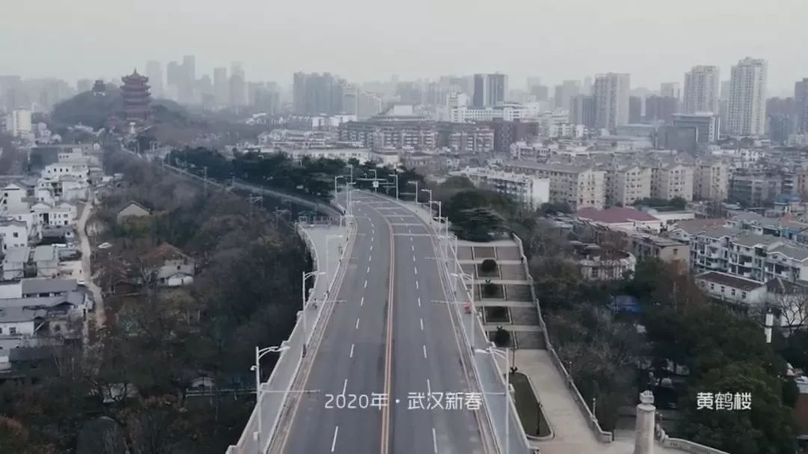
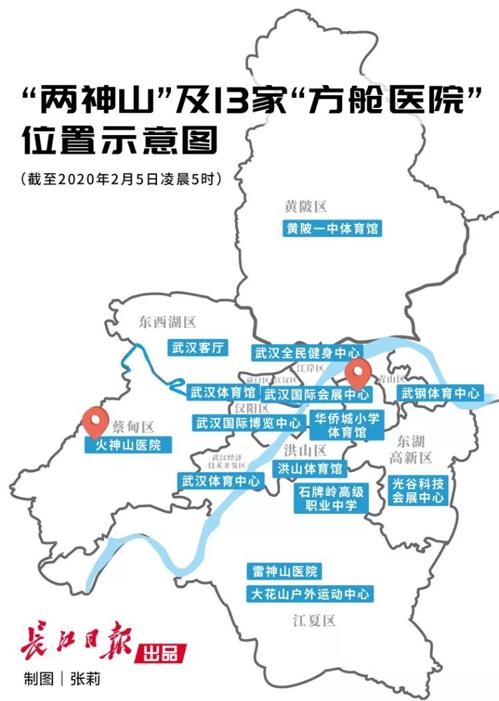

疫情日记 | 武汉封城的第十八天
原文链接 备份链接 按照西安市要求，明天正式复工，公司陆续发了文件，统计能如期到岗的员工，集中办理小区出入的说明文件（西安部分小区已经封门，进出需要提供盖章材料，更严格者贴通知“上班外出后也不能再进小区，自己和单位协商找地方住”）。 我情 …

_
编者按
_
2月5日，海螺推送了杨甸的文章《人压抑到极点，只想大哭一场——一个武汉市民的生活日记》，该文记录了作者从1月18到30号的生活，武汉城内人们的现况牵动着无数读者的心。作者应广大读者要求，更新了“武汉日记”，记述了自己最近十天的经历。

截图自 @垄上频道 发布的武汉最新城市宣传片
“
2月1日
_
昨晚老妈说家里的物资已经快弹尽粮绝了。是啊，五口人再怎么省着吃，之前抢购的那点东西也是不够啊。所以一早就跟老公商量还是得出去买东西。因为不能开车，只能找附近的大超市。导航显示最近的中百仓储在水果湖（省政府所在地），老公很是兴奋，说那里肯定物资充足。于是我俩全副武装一番出门了。一路上，尽管阳光明媚，天空碧蓝，但空旷的大街几乎看不到一个人，只有红绿灯还在那里正常工作。
半小时的路程，到了超市门口才感觉到人间烟火。因为人很多，进门要先量体温，但看着狭小的空间内黑压压的人，我们心里还是不由得一紧。不过超市内物资确实充足，价格也没什么变化，心里有些安慰，真心感谢全国人民在关键时刻给予武汉的支援。我们以最快的速度拿了些肉、鱼和一些冷冻食品就撤退了，蔬菜区人太多要排队打价，觉得风险太高，打算在超市门口的小摊上买点就算了。
全国各地蔬菜物资驰援武汉
晚上小区群里热心的邻居在组织团购，我告诉大家可以去水果湖这个大超市买肉，结果一个邻居称赞我是英雄，说水果湖是重灾区。我吓了一跳，赶紧把之前准备的药吃了一些。晚上觉得头疼，一夜没睡好。第二天又觉得有点咳嗽，不知道是不是心里压力过大还是什么原因，总觉得自己不舒服，老公说再这样下去我得去六角亭（武汉的精神病院）了。
“
2月3日
_
今天武汉又是晴天，也是“火神山”医院交付、正式接收病人的日子。
昨天就有很多关于交付的报道，只是不太想看。想想第一次听到这个“火神山”还有后来又出来一个“雷神山”医院时，我还以为是广大人民赞扬建院神速给起的网名。可后来得知这两个名字还蕴含着很多五行风水涵义时，我不禁哑然失笑。我们一直接受的都是无神论教育，崇尚的是科学，可现在在这场疫情面前，大家却要靠风水取名来渡过难关，也是有些讽刺意味。
然而，一连几天，武汉的新增肺炎人数都不断攀升。

2月4日上午9时许，首批患者抵达火神山医院
“
2月5日
_
今天武汉市公布的新增数字都快接近2000人了。其实一点也不奇怪，反而是一件好事，预计未来几天数字会更吓人,但这说明能接受治疗的人越来越多，所以确诊的人也越来越多，而不是像之前那样，很多人在不能确诊、疑似中就走向生命的终点。
推送的信息也显示，目前几乎武汉市所有的医院，包括那些规模很小的民营医院和社区服务中心，都已经被整体征用。而且这几天社区也终于开始排查各个小区已经确诊的、疑似的、有发热症状的居民，并开始在每个小区进行公示，提示大家做好个人防护。很多宾馆、体育馆、展览中心也被征用建立“方舱”医院，集中收治轻症和发热的病人……一切都显示越来越有章法,感觉武汉政府似乎从这场战役中终于醒悟过来,终于能做一些让人心安的实事,尽管迟到了那么久,但终究能让我们这些平民老百姓看到一点希望,看到一点点曙光!

“
2月6日
_
今天一大早，我就被小区群的一则信息给震懵了。早上物业在群里发送了我们小区的疫情情况，总共13栋楼，只有两栋没有确诊或疑似病例，其他楼全部沦陷！可昨天的公示还显示我们小区才两栋楼有病人啊，今天怎么就从天而降这么多可能感染者？特别是我住的这一栋，昨天还贴着“无感染楼栋”的提示牌，今天就已经有人确诊入院了！大家纷纷在群里质问物业和社区，是不是之前存在瞒报？这个病按武汉市的收治流程，从发热有症状到确诊入院至少也要7-10天。可物业管理人员说，他们也都是按社区给他们的资料来通报的，具体他们并不知晓！除了愤怒，大家也没有什么更多的想法了，只能相互提醒待在家里，做好个人防护。
上午给老妈说起我们小区的感染情况，提醒他们一定要万分小心，不要外出。老妈突然问我，11栋是哪个单元的人感染？我看了下公示是1单元，但没有公布具体的楼层或门牌号码。老妈自言自语说该不是他们吧？我一惊，连忙追问怎么回事？老妈告诉我，好几天前我老爸跟她说起那边物业做保洁的一个60岁的老太发烧了好几天，还坚持上了几天班才请假，我老爸后来还专门去问了他老伴儿（他们老家和我们老家是同一个镇子的，所以老人们平常来往比较多）情况怎么样，老伴儿支支吾吾说时好时坏，然后这些天他还在物业继续做各楼栋的保洁。我顿时惊呆了，只觉得如炸雷一般，脑袋嗡嗡响。好一会儿我才回过神，问老妈怎么不告诉我？老妈说老爸专门交代了，不能告诉我，不然我会神经紧张不让他下楼了！我…我…我简直要晕过去了,真不知道说什么好?
突然就想起昨天下午看到小区群里说我们对面的小区,有一确诊的60多岁的大爷因为暂时没床位只能在家隔离,然后闲得无聊下楼在小区遛达,居然连口罩都没戴!后来被知情的物业管理人员看到了,拿着高音喇叭冲着他狂叫,把他赶回家,结果整个小区炸了锅一般。难怪昨天下午看见对面小区白烟四起，烟雾弥漫，原来是物业在做大消毒。后来听说物业将那个老人住的整栋楼的电梯全部关停封闭了！当时我虽然也对他的这种自私自利的做法感到不满，但还是多少有些同情大爷！可现在，我自己的爸妈居然也向我隐瞒了他们知道的事情，还跟疑似患者有密切接触，我就只觉得生气！天啊，我每天给他们讲这次疫情的严重性，天天发视频给他们看，他们从外面回来我追着给他们消毒，把衣服外套拿到阳台上吹风晒太阳，我以为他们都和我一样重视了，哪想他们压根就没放在心上，仍然固执地坚持自己的做法和想法。
老公脸有些黑，一言不发。我继续追问老妈具体的时间，这两天老爸和他们接触的次数，但老妈说不上来，又再三叮嘱我千万不能问我老爸，不然被老爸误会老妈打小报告，一定会爆发家庭战争。我简直不知道说什么好了。
快中午时，老爸回来了，我尽量心平气和地跟他说了一下目前我们小区的疫情，特别强调了一下11栋的情况，说我们小区现在风险实在太高，他不能再下楼了。老妈立刻接话说，那他们要回自己家，不和我们三口一起住了。我同意了。因为他们住的小区是很成熟的社区，社区服务中心就在他们那栋楼旁边，我每天也都关注那边情况，比我们这边好很多。而且我觉得，不管怎样，老爸也算是疑似病例的密切接触者，应该居家观察隔离一段时间，我这边家里还有孩子，五口人都挤在一起确实不科学。于是吃过午饭后，我开始帮他们收拾东西，备齐了一个礼拜的物资，还有一些常备药，快傍晚的时候让老公把他们送回自己家去了。然后我打电话给我姐姐和妹妹，向她们说了下情况，让她们多打电话给爸妈，恳请他们一定不要出门，做好自我监控和防护，我觉得现在我说啥他们都麻木了，不会严格执行的。
晚上跟楼上的邻居微信聊天，说起这件事。她告诉我她的父母也是一样，根本就不听孩子们的各种劝告，喜欢我行我素，固执得很。她说她老爸在老家（黄冈）村子里连个口罩都不戴到处窜，人家都打好几个电话给她投诉，让她管管老爷子。她也是气得没办法，最后对村委会说再看见她老爸不遵守规定到处晃，直接关起来进行隔离，她一点意见都没有。
哎，能说什么呢？看看现在的数据，一旦染病，抵抗力差的老年人死亡率很高。我一开始就向我老爸老妈宣传了这个情况，我老妈总是说“生死有命”、“该死就得死，不该死怎么都不会死”。再看看超市、公共场所，以老年人在外面晃的居多，自我防护意识普遍很差，又不听劝告，真是一大悲哀！
“
2月7日
_
很早就醒了。昨晚睡得很不好，先是一直关注李文亮的报道，祈祷能出现奇迹，直到凌晨尘埃落定，一声哀叹，心情低落到极点！然后又想着如果老爸被感染了，我们这一大家子怎么办？
然后起床第一件事，看看小区群的疫情公布，关注的11栋又新增了一例，心头不由地一紧。想想昨晚和姐姐商量的处理办法，先确认11栋感染的人里有没有老爸熟识的老乡。打电话给物业，他们说不知道具体的人，只能问社区。打电话到社区，社区的工作人员不肯告诉我具体的情况。我告诉他我们的实际情况，哀求他能否透漏点信息给我，最后他问我要确认的这两个人多大年龄，我告诉他是60多岁的老头老太，他告诉我说11栋确诊的都是40多岁的人，没有老头老太太！我听了终于有种劫后余生的感觉，眼泪都快掉下来了！不过我还没有打电话告诉父母，希望他们在家好好待着，免得到处乱跑，又遇到什么危险。
这些都是完全没办法的办法，疫情已经把大家弄得都快神经质了，人情什么的都顾上了，只能每天祈祷自己平安、家人平安，武汉快点好起来……
_
_
感谢作者杨甸授权海螺发表武汉日记（二），未经许可，请勿转载。祝作者及其家人平安顺利，也祈祷全国早日抗疫成功，我们在春天相见。图片来源于网络，如侵删。
_
_
本期编辑 | 谭静怡
_
_
推荐阅读
_
_
_
_

_

_
_
疫情仍在持续，海螺向各地朋友们征集“战疫日记”，请大家用文字、照片、音频、视频记录这段生活，这将是社会史、文化史、医学史的重要档案。投稿可以直接发链接给后台，也可以email到yearbookpku@163.com。
_
海螺社区
本文如有收入，全部捐出抗疫。
微信扫一扫赞赏作者 赞赏
长按二维码向我转账
本文如有收入，全部捐出抗疫。
受苹果公司新规定影响，微信 iOS 版的赞赏功能被关闭，可通过二维码转账支持公众号。
原文链接 备份链接 按照西安市要求，明天正式复工，公司陆续发了文件，统计能如期到岗的员工，集中办理小区出入的说明文件（西安部分小区已经封门，进出需要提供盖章材料，更严格者贴通知“上班外出后也不能再进小区，自己和单位协商找地方住”）。 我情 …
原文链接 备份链接 一床难求，这是治愈率与收治率失衡的结果 记者 | 吴洋洋 编辑 | 王姗姗 图表资料整理 | 实习记者 文思敏、袁颖 制图 | 程 星 “2月5日当日，市指挥部宣传组对网友在各类互联网平台发布本人或亲友的求助信息做核 …
原文链接 备份链接 对于封城后的武汉及周边地区的人们来说，社区的存在感从未如此强烈，“隔离”成了生活中绕不开的关键词。今天的“武汉日常”每日书中，三位作者向大家展现了生活在疫区的真实感受。确诊和疑似数据增长的背后，是紧缺的医疗资源，是充 …
原文链接 备份链接 在医学专家们看来，集中收留、隔离是第一步。接下来对疑似病患的确诊、分类诊治、收治入院，将是对医疗、物资、人员分配等多重资源配置能力的综合考验，相信各方面群策群力可以渡过难关 2月3号上午8点，人们在七医院门口排队等待核 …
原文链接 备份链接 疫情发展 根据丁香医生实时数据，截至 2020 年 2 月 4 日 18 时，全国累计确诊病例 20520 例，疑似病例 23214 例。较昨日，新增确诊病例 3284 例，新增疑似病例 5027 例。其中， …